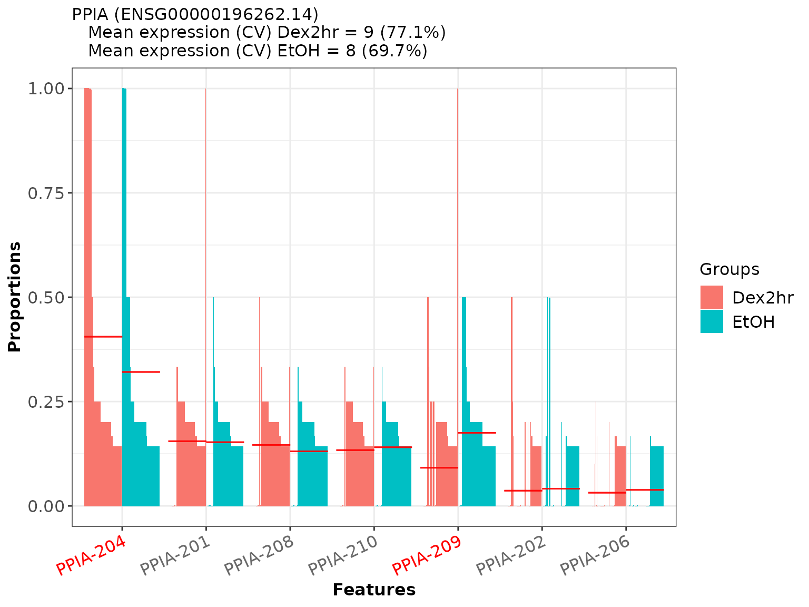
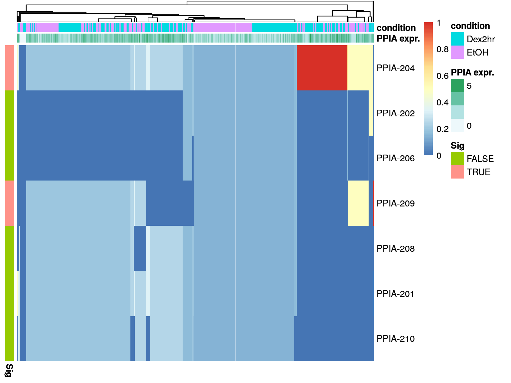
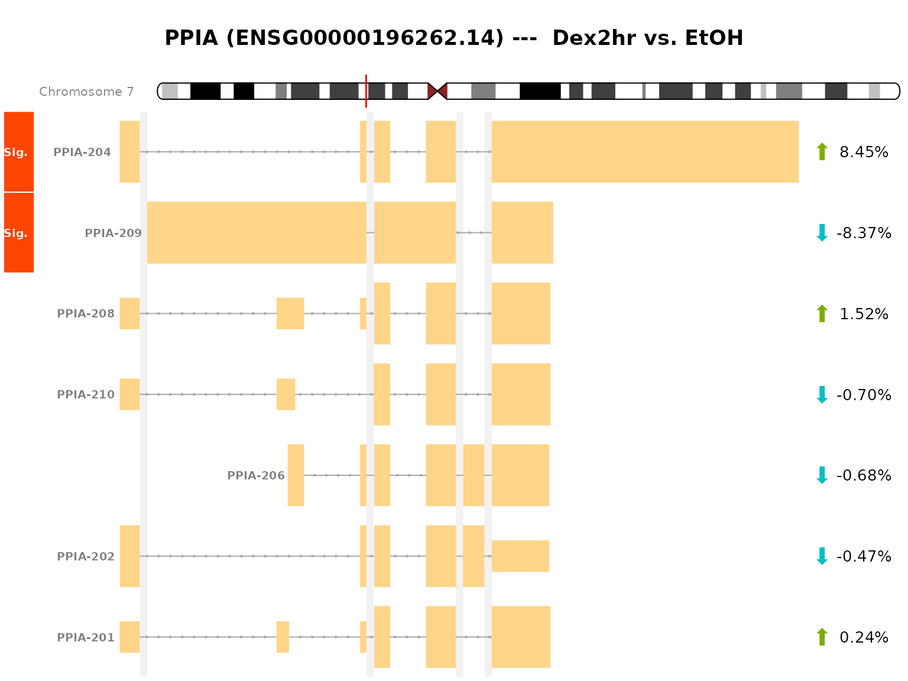
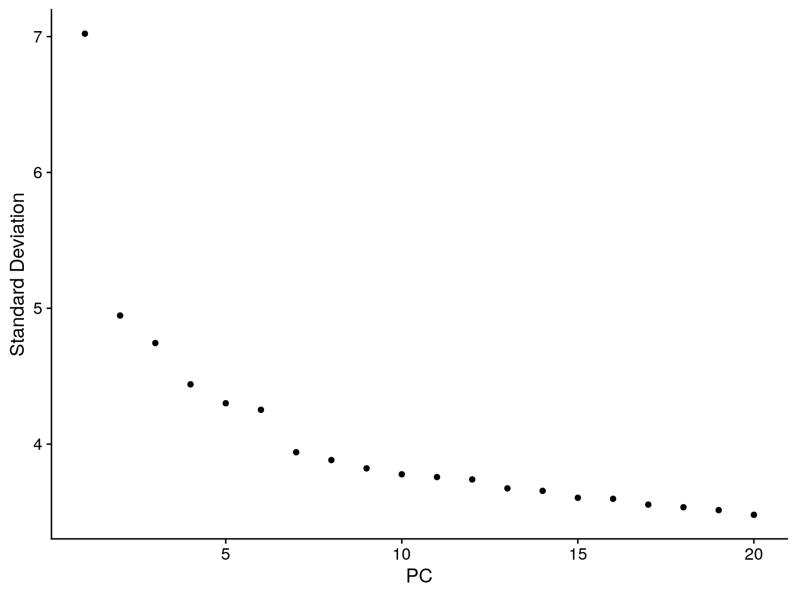
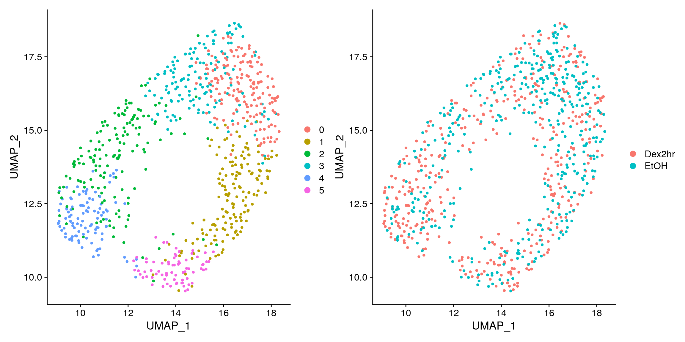
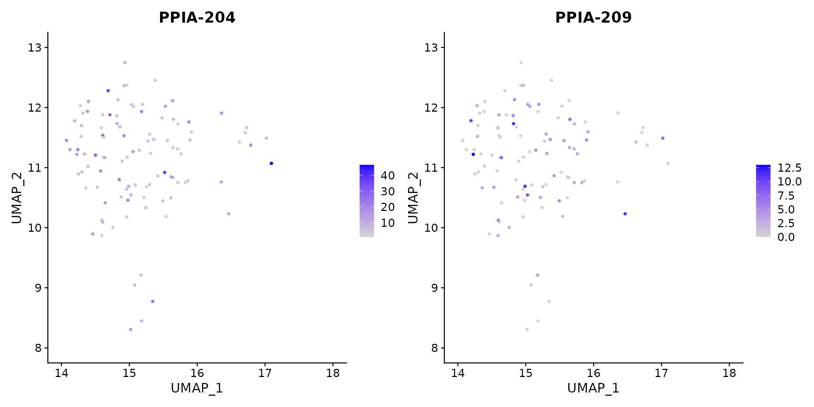

vignettes/Hoffman_human_single-cell_analysis.Rmd
Hoffman_human_single-cell_analysis.RmdThis vignette exemplifies the analysis of single-cell RNA-seq data with DTUrtle. The data used in this vignette is publicly available as Bioproject PRJNA594939 and the used FASTQ-files can be downloaded from here. The corresponding publication from Hoffman et al. can be found here.
The following code shows an example of an DTUrtle workflow. Assume we have performed the preprocessing as described here and the R working directory is a newly created folder called dtu_results.
Load the DTUrtle package and set the BiocParallel parameter. It is recommended to perform computations in parallel, if possible.
library(DTUrtle) #use up to 10 cores for computation biocpar <- BiocParallel::MulticoreParam(10)
We want to start by reading in our quantification counts, as well as a file specifying which transcript ID or name belongs to which gene ID or name.
To get this transcript to gene (tx2gene) mapping, we will utilize the already present Gencode annotation file gencode.v34.annotation.gtf. The import_gtf() function utilizes the a rtracklayer package and returns a transcript-level filtered version of the available data.
tx2gene <- import_gtf(gtf_file = "../gencode.v34.annotation.gtf")
head(tx2gene, n=3) #> seqnames start end width strand source type score phase #> 1 chr1 11869 14409 2541 + HAVANA transcript NA NA #> 2 chr1 12010 13670 1661 + HAVANA transcript NA NA #> 3 chr1 14404 29570 15167 - HAVANA transcript NA NA #> gene_id gene_type gene_name level #> 1 ENSG00000223972.5 transcribed_unprocessed_pseudogene DDX11L1 2 #> 2 ENSG00000223972.5 transcribed_unprocessed_pseudogene DDX11L1 2 #> 3 ENSG00000227232.5 unprocessed_pseudogene WASH7P 2 #> hgnc_id havana_gene transcript_id #> 1 HGNC:37102 OTTHUMG00000000961.1 ENST00000456328.2 #> 2 HGNC:37102 OTTHUMG00000000961.1 ENST00000450305.2 #> 3 HGNC:38034 OTTHUMG00000000958.1 ENST00000488147.1 #> transcript_type transcript_name transcript_support_level #> 1 processed_transcript DDX11L1-202 1 #> 2 transcribed_unprocessed_pseudogene DDX11L1-201 NA #> 3 unprocessed_pseudogene WASH7P-201 NA #> tag havana_transcript exon_number exon_id ont protein_id ccdsid #> 1 basic OTTHUMT00000362751.1 <NA> <NA> <NA> <NA> <NA> #> 2 basic OTTHUMT00000002844.1 <NA> <NA> PGO:0000019 <NA> <NA> #> 3 basic OTTHUMT00000002839.1 <NA> <NA> PGO:0000005 <NA> <NA>
There are a lot of columns present in the data frame, but at the moment we are mainly interested in the columns gene_id, gene_name, transcript_id and transcript_name.
As we want to use gene and transcript names as the main identifiers in our analysis (so we can directly say: Gene x is differential), we should ensure that each gene / transcript name maps only to a single gene / transcript id.
For this we can use the DTUrtle function one_to_one_mapping(), which checks if there are identifiers, which relate to the same name. If this is the case, the names (not the identifiers) are slightly altered by appending a number. If id_x and id_y both have the name ABC, the id_y name is altered to ABC_2 by default.
tx2gene$gene_name <- one_to_one_mapping(name = tx2gene$gene_name, id = tx2gene$gene_id) #> Changed 78 names. tx2gene$transcript_name <- one_to_one_mapping(name = tx2gene$transcript_name, id = tx2gene$transcript_id) #> Changed 161 names.
We see that it was a good idea to ensure the one to one mapping, as many doublets have been corrected.
For the run_drimseq() tx2gene parameter, we need a data frame, where the first column specifies the transcript identifiers and the second column specifying the corresponding gene names. Rather than subsetting the data frame, a column reordering is proposed, so that additional data can still be used in further steps. DTUrtle makes sure to carry over additional data columns in the analysis steps. To reorder the columns of our tx2gene data frame, we can utilize the move_columns_to_front() functionality.
tx2gene <- move_columns_to_front(df = tx2gene, columns = c("transcript_name", "gene_name"))
head(tx2gene, n=5) #> transcript_name gene_name seqnames start end width strand source #> 1 DDX11L1-202 DDX11L1 chr1 11869 14409 2541 + HAVANA #> 2 DDX11L1-201 DDX11L1 chr1 12010 13670 1661 + HAVANA #> 3 WASH7P-201 WASH7P chr1 14404 29570 15167 - HAVANA #> 4 MIR6859-1-201 MIR6859-1 chr1 17369 17436 68 - ENSEMBL #> 5 MIR1302-2HG-202 MIR1302-2HG chr1 29554 31097 1544 + HAVANA #> type score phase gene_id gene_type #> 1 transcript NA NA ENSG00000223972.5 transcribed_unprocessed_pseudogene #> 2 transcript NA NA ENSG00000223972.5 transcribed_unprocessed_pseudogene #> 3 transcript NA NA ENSG00000227232.5 unprocessed_pseudogene #> 4 transcript NA NA ENSG00000278267.1 miRNA #> 5 transcript NA NA ENSG00000243485.5 lncRNA #> level hgnc_id havana_gene transcript_id #> 1 2 HGNC:37102 OTTHUMG00000000961.1 ENST00000456328.2 #> 2 2 HGNC:37102 OTTHUMG00000000961.1 ENST00000450305.2 #> 3 2 HGNC:38034 OTTHUMG00000000958.1 ENST00000488147.1 #> 4 3 HGNC:50039 <NA> ENST00000619216.1 #> 5 2 HGNC:52482 OTTHUMG00000000959.1 ENST00000473358.1 #> transcript_type transcript_support_level tag #> 1 processed_transcript 1 basic #> 2 transcribed_unprocessed_pseudogene NA basic #> 3 unprocessed_pseudogene NA basic #> 4 miRNA NA basic #> 5 lncRNA 5 basic #> havana_transcript exon_number exon_id ont protein_id ccdsid #> 1 OTTHUMT00000362751.1 <NA> <NA> <NA> <NA> <NA> #> 2 OTTHUMT00000002844.1 <NA> <NA> PGO:0000019 <NA> <NA> #> 3 OTTHUMT00000002839.1 <NA> <NA> PGO:0000005 <NA> <NA> #> 4 <NA> <NA> <NA> <NA> <NA> <NA> #> 5 OTTHUMT00000002840.1 <NA> <NA> <NA> <NA> <NA>
This concludes the tx2gene formatting.
The read-in of the quantification counts can be achieved with import_counts(), which uses the tximport package in the background. This function is able to parse the output of many different quantification tools. Advanced users might be able to tune parameters to parse arbitrary output files from currently not supported tools.
In the pre-processing vignette we quantified the counts with Alevin. The folder structure of the quantification results folder looks like this:
list.files("../alevin/") #> [1] "index" "sc_Dex2hr" "sc_EtOH" "txmap.tsv"
We will create a named files vector, pointing to the quants_mat.gz file for each sample. The names help to differentiate the samples later on.
The files object looks like this:
#> sc_Dex2hr
#> "../alevin/sc_Dex2hr/alevin/quants_mat.gz"
#> sc_EtOH
#> "../alevin/sc_EtOH/alevin/quants_mat.gz"The actual import will be performed with import_counts().
cts_list <- import_counts(files = files, type = "alevin") #> Reading in 2 alevin runs. #> importing alevin data is much faster after installing `fishpond` (>= 1.2.0) #> reading in alevin gene-level counts across cells #> importing alevin data is much faster after installing `fishpond` (>= 1.2.0) #> reading in alevin gene-level counts across cells
The cts_list object is a named list, with a sparse Matrix per sample. In single-cell data, each sample normally consists of many different cells with an unique cell barcode. These cell barcodes might overlap between samples though. For this reason, many single-cell workflow use a cell barcode extension, uniquely assigning each cell to a sample. This can also be done in DTUrtle with combine_to_matrix(), which is only applicable if you are analyzing single-cell data.
This function will make sure that there are no duplicated barcodes between you samples, before merging the matrices together. If there are duplicated barcodes, a cell extension is added. Additionally, all not expressed features are removed to reduce the size of the data.
cts <- combine_to_matrix(tx_list = cts_list) #> Merging matrices #> Excluding 149854 overall not expressed features. #> 77347 features left.
Apparently there were no duplicated cell barcodes between our samples, so a cell barcode extension is not necessary. Optionally you could still force the addition by specifying a vector of cell_extensions.
dim(cts) #> [1] 77347 796
There are ~77k features left for 796 cells.
Finally, we need a sample metadata data frame, specifying which sample belongs to which comparison group. This table is also convenient to store and carry over additional metadata.
For single-cell data, this is not a sample metadata data frame, but a cell metadata data frame. We have to specify the information on cell level, with the barcodes as identifiers.
If such a table is not already present, it can be easily prepared:
pd <- data.frame("id"=colnames(cts), "group"=ifelse(colnames(cts) %in% colnames(cts_list$sc_Dex2hr),"Dex2hr","EtOH"), stringsAsFactors = F)
head(pd, n=5) #> id group #> 1 GCCAGAGCGAATGTTAAC Dex2hr #> 2 TGAATTCAGACTAGTCTG Dex2hr #> 3 CGGCGTCTTACGTTCTTG Dex2hr #> 4 TCGGGAGGACGATACCGA Dex2hr #> 5 TCGGGACCTCTAGAGTGA Dex2hr
We have prepared all necessary data to perform the differentially transcript usage (DTU) analysis. DTUrtle only needs two simple commands to perform it. Please be aware that these steps are the most compute intensive and, depending on your data, might take some time to complete. It is recommended to parallelize the computations with the BBPARAM parameter, if applicable.
First, we want to set-up and perform the statistical analysis with DRIMSeq, a DTU specialized statistical framework utilizing a Dirichlet-multinomial model. This can be done with the run_drimseq() command. We use the previously imported data as parameters, specifying which column in the cell metadata data frame contains ids and which the group information we want. We should also specify which of the groups should be compared (if there are more than two) and in which order. The order given in the cond_levels parameter also specifies the comparison formula.
Note: By default
run_drimseq()converts sparse count matrix to a dense format for statistical computations (force_dense=TRUE). While this increases memory usage, it currently also reduces the run time. The computations can be performed keeping the sparse counts by settingforce_dense=FALSE.
dturtle <- run_drimseq(counts = cts, tx2gene = tx2gene, pd=pd, id_col = "id",
cond_col = "group", cond_levels = c("Dex2hr", "EtOH"), filtering_strategy = "sc",
BPPARAM = biocpar)
#> Using tx2gene columns:
#> transcript_name ---> 'feature_id'
#> gene_name ---> 'gene_id'
#>
#> Comparing Dex2hr vs EtOH
#>
#> Proceed with cells/samples:
#> Dex2hr EtOH
#> 399 397
#>
#> Filtering...
#>
|
| | 0%
|
|======= | 10%
|
|============== | 20%
|
|===================== | 30%
|
|============================ | 40%
|
|=================================== | 50%
|
|========================================== | 60%
|
|================================================= | 70%
|
|======================================================== | 80%
|
|=============================================================== | 90%
|
|======================================================================| 100%
#> Retain 21452 of 77347 features.
#> Removed 55895 features.
#>
#> Performing statistical tests...
#> * Calculating mean gene expression..
#> Took 0.6488 seconds.
#> * Estimating common precision..
#> Took 2.0406 seconds.
#> ! Using common_precision = 993.3516 as prec_init !
#> * Estimating genewise precision..
#> ! Using loess fit as a shrinkage factor !
#> Took 8.4099 seconds.
#> * Fitting the DM model..
#> Using the one way approach.
#> Took 11.1801 seconds.
#> * Fitting the BB model..
#> Using the one way approach.
#> Took 3.3568 seconds.
#> * Fitting the DM model..
#> Using the one way approach.
#> Took 8.4501 seconds.
#> * Calculating likelihood ratio statistics..
#> Took 0.003 seconds.
#> * Fitting the BB model..
#> Using the one way approach.
#> Took 2.1739 seconds.
#> * Calculating likelihood ratio statistics..
#> Took 0.0103 seconds.As in all statistical procedures, it is of favor to perform as few tests as possible but as much tests as necessary, to maintain a high statistical power. This is achieved by filtering the data to remove inherently uninteresting items, for example very lowly expressed genes or features. DTUrtle includes a powerful and customizable filtering functionality for this task, which is an optimized version of the dmFilter() function of the DRIMSeq package.
Above we used a predefined filtering strategy for single-cell data, requiring that features contribute at least 5% of the total expression in at least 5% of the cells of the smallest group. Additionally, all genes are filtered, which only have a single transcript left, as they can not be analyzed in DTU analysis. The filtering options can be extended or altered by the user.
dturtle$used_filtering_options #> $DRIM #> $DRIM$min_samps_gene_expr #> [1] 0 #> #> $DRIM$min_samps_feature_expr #> [1] 0 #> #> $DRIM$min_samps_feature_prop #> [1] 19.85 #> #> $DRIM$min_gene_expr #> [1] 0 #> #> $DRIM$min_feature_expr #> [1] 0 #> #> $DRIM$min_feature_prop #> [1] 0.05 #> #> $DRIM$run_gene_twice #> [1] TRUE
The resulting dturtle object will be used as our main results object, storing all necessary and interesting data of the analysis. It is a simple and easy-accessible list, which can be easily extended / altered by the user. By default three different meta data tables are generated: - meta_table_gene: Contains gene level meta data. - meta_table_tx: Contains transcript level meta data. - meta_table_sample: Contains sample level meta data (as the created pd data frame)
These meta data tables are used in for visualization purposes and can be extended by the user.
dturtle$meta_table_gene[1:5,1:5] #> gene exp_in exp_in_Dex2hr exp_in_EtOH seqnames #> A1BG A1BG 0.03768844 0.04511278 0.03022670 chr19 #> AAAS AAAS 0.04020101 0.04511278 0.03526448 chr12 #> AAGAB AAGAB 0.07286432 0.09273183 0.05289673 chr15 #> AAMDC AAMDC 0.03894472 0.03508772 0.04282116 chr11 #> AAMP AAMP 0.09422111 0.09774436 0.09068010 chr2
As proposed in Love et al. (2018), we will use a two-stage statistical testing procedure together with a post-hoc filtering on the standard deviations in proportions (posthoc_and_stager()). We will use stageR to determine genes, that show a overall significant change in transcript proportions. For these significant genes, we will try to pinpoint specific transcripts, which significantly drive this overall change. As a result, we will have a list of significant genes (genes showing the overall change) and a list of significant transcripts (one or more transcripts of the significant genes). Please note, that not every significant gene does have one or more significant trasncripts. It is not always possible to attribute the overall change in proportions to single transcripts. These two list of significant items are computed and corrected against a overall false discovery rate (OFDR).
Additionally, we will apply a post-hoc filtering scheme to improve the targeted OFDR control level. The filtering strategy will discard transcripts, which standard deviation of the proportion per cell/sample is below the specified threshold. For example by setting posthoc=0.1, we will exclude all transcripts, which proportional expression (in regard to the total gene expression) deviates by less than 0.1 between cells. This filtering step should mostly exclude ‘uninteresting’ transcripts, which would not have been called as significant either way.
dturtle <- posthoc_and_stager(dturtle = dturtle, ofdr = 0.05, posthoc = 0.1) #> Posthoc filtered 20608 features. #> The returned adjusted p-values are based on a stage-wise testing approach and are only valid for the provided target OFDR level of 5%. If a different target OFDR level is of interest,the entire adjustment should be re-run. #> Found 32 significant genes with 37 significant transcripts (OFDR: 0.05)
The dturtle object now contains additional elements, including the lists of significant genes and significant transcripts.
head(dturtle$sig_gene) #> [1] "AGR2" "ATP5F1B" "COX6A1" "EEF1A1" "HSPB1" "NPM1" head(dturtle$sig_tx) #> AGR2 AGR2 ATP5F1B ATP5F1B COX6A1 #> "AGR2-203" "AGR2-204" "ATP5F1B-204" "ATP5F1B-201" "COX6A1-201" #> COX6A1 #> "COX6A1-202"
The DTUrtle package contains multiple visualization options, enabling a in-depth inspection.
We will start by aggregating the analysis results to a data frame with create_dtu_table(). This function is highly flexible and allows aggregation of gene or transcript level metadata in various ways. By default some useful information are included in the dtu table, in this example we further specify to include the seqnames column of the gene level metadata (which contains chromosome information) as well as the maximal expressed in ratio from the transcript level metadata.
dturtle <- create_dtu_table(dturtle = dturtle, add_gene_metadata = list("chromosome"="seqnames"), add_tx_metadata = list("tx_expr_in_max" = c("exp_in", max)))
head(dturtle$dtu_table, n=5) #> gene_ID gene_qvalue minimal_tx_qvalue number_tx number_significant_tx #> PSMB4 PSMB4 2.384975e-03 7.737662e-04 7 1 #> RPL13A RPL13A 1.594164e-12 4.288133e-14 12 2 #> RPLP1 RPLP1 8.463652e-15 1.744164e-16 4 3 #> COX6A1 COX6A1 2.369833e-02 4.364625e-03 3 2 #> ATP5F1B ATP5F1B 4.299031e-05 1.178635e-06 5 2 #> max(Dex2hr-EtOH) chromosome tx_expr_in_max #> PSMB4 0.1549467 chr1 0.6306533 #> RPL13A 0.1532888 chr19 0.9183417 #> RPLP1 0.1389011 chr15 0.9623116 #> COX6A1 -0.1365187 chr12 0.5778894 #> ATP5F1B 0.1355291 chr12 0.8128141
The column definitions are as follows:
This table is our basis for creating an interactive HTML-table of the results.
As a first visualization option we will create a barplot of the proportions of each transcript per sample. We can use the function plot_proportion_barplot() for this task, which also adds the mean proportion fit per subgroup to the plot (by default as a red line).
As an example, we will create the plot for the gene PPIA, which is one of the significant genes found in the analysis. We will optionally provide the gene_id for PPIA, which is stored in the column gene_id.1 of dturtle$meta_table_gene.
temp <- plot_proportion_barplot(dturtle = dturtle, genes = "PPIA", meta_gene_id = "gene_id.1") #> Creating 1 plots: temp$PPIA

We see, that most of the proportional differences for PPIA are driven by 2 of the 7 transcripts (PPIA-204 and PPIA-209). These transcripts are also the significant transcripts found in the analysis (as they are marked in red). We additionally see, that a DGE analysis would most likely not report PPIA as differential, because the mean gene expression is quite alike between the groups (together with a common high coefficient of variation).
For the interactive HTML-table we would need to save the images to disk (in the to-be-created sub folder “images” of the current working directory). There is also a convenience option, to directly add the file paths to the dtu_table. As multiple plots are created, we can provide a BiocParallel object to speed up the creation. If no specific genes are provided, all significant genes will be plotted.
dturtle <- plot_proportion_barplot(dturtle = dturtle,
meta_gene_id = "gene_id.1",
savepath = "images",
add_to_table = "barplot",
BPPARAM = biocpar)
#> Creating 32 plots:
#>
|
| | 0%
|
|======= | 10%
|
|============== | 20%
|
|===================== | 30%
|
|============================ | 40%
|
|=================================== | 50%
|
|========================================== | 60%
|
|================================================= | 70%
|
|======================================================== | 80%
|
|=============================================================== | 90%
|
|======================================================================| 100%head(dturtle$dtu_table$barplot) #> [1] "images/PSMB4_barplot.png" "images/RPL13A_barplot.png" #> [3] "images/RPLP1_barplot.png" "images/COX6A1_barplot.png" #> [5] "images/ATP5F1B_barplot.png" "images/RPL7A_barplot.png" head(list.files("./images/")) #> [1] "AGR2_barplot.png" "AGR2_pheatmap.png" #> [3] "AGR2_transcripts.png" "ATP5F1B_barplot.png" #> [5] "ATP5F1B_pheatmap.png" "ATP5F1B_transcripts.png"
A different visualization option is a heatmap, where additional meta data can be displayed alongside the transcript proportions (plot_proportion_pheatmap()). This visualization uses the pheatmap package, the user can specify any of the available parameters to customize the results.
temp <- plot_proportion_pheatmap(dturtle = dturtle, genes = "PPIA", include_expression = T, treeheight_col=20) #> Creating 1 plots: temp$PPIA

By default, row and column annotations are added. This plot helps to examine the transcript composition of groups of cells. We see, there is a subgroup of cells, that seem to almost only express both PPIA-204 and PPIA-209 at equal proportions. The same goes for a even smaller subgroup of cells, which express PPIA-204 alongside with PPIA-202.
Again, we can save the plots to disk and add them to the dtu_table:
dturtle <- plot_proportion_pheatmap(dturtle = dturtle,
include_expression = T,
treeheight_col=20,
savepath = "images",
add_to_table = "pheatmap",
BPPARAM = biocpar)
#> Creating 32 plots:
#>
|
| | 0%
|
|======= | 10%
|
|============== | 20%
|
|===================== | 30%
|
|============================ | 40%
|
|=================================== | 50%
|
|========================================== | 60%
|
|================================================= | 70%
|
|======================================================== | 80%
|
|=============================================================== | 90%
|
|======================================================================| 100%head(dturtle$dtu_table$pheatmap) #> [1] "images/PSMB4_pheatmap.png" "images/RPL13A_pheatmap.png" #> [3] "images/RPLP1_pheatmap.png" "images/COX6A1_pheatmap.png" #> [5] "images/ATP5F1B_pheatmap.png" "images/RPL7A_pheatmap.png" head(list.files("./images/")) #> [1] "AGR2_barplot.png" "AGR2_pheatmap.png" #> [3] "AGR2_transcripts.png" "ATP5F1B_barplot.png" #> [5] "ATP5F1B_pheatmap.png" "ATP5F1B_transcripts.png"
Until now, we looked at the different transcripts as abstract entities. Alongside proportional differences, the actual difference in the exon-intron structure of transcripts is of great importance for many research questions. This structure can be visualized with the plot_transcripts_view() functionality of DTUrtle.
This visualization is based on the Gviz package and needs a path to a GTF file (or a read-in object). In Import and format data we already imported a GTF file. This was subset to transcript-level (via the import_gtf() function), thus this is not sufficient for the visualization. We can reuse the actual GTF file though, which should in general match with the one used for the tx2gene data frame.
As we have ensured the one_to_one mapping in Import and format data and potentially renamed some genes, we should specify the one_to_one parameter in this call.
plot_transcripts_view(dturtle = dturtle, genes = "PPIA", gtf = "../gencode.v34.annotation.gtf", genome = 'hg38', one_to_one = T) #> #> Importing gtf file from disk. #> #> Performing one to one mapping in gtf #> #> Found gtf GRanges for 1 of 1 provided genes. #> #> Fetching ideogram tracks ... #> Could not generate IdeogramTrack for: #> #> Creating 1 plots:

#> $PPIA
#> $PPIA$chr7
#> Ideogram track 'chr7' for chromosome 7 of the hg38 genome
#>
#> $PPIA$OverlayTrack
#> OverlayTrack 'OverlayTrack' containing 2 subtracks
#>
#> $PPIA$OverlayTrack
#> OverlayTrack 'OverlayTrack' containing 2 subtracks
#>
#> $PPIA$OverlayTrack
#> OverlayTrack 'OverlayTrack' containing 2 subtracks
#>
#> $PPIA$OverlayTrack
#> OverlayTrack 'OverlayTrack' containing 2 subtracks
#>
#> $PPIA$OverlayTrack
#> OverlayTrack 'OverlayTrack' containing 2 subtracks
#>
#> $PPIA$OverlayTrack
#> OverlayTrack 'OverlayTrack' containing 2 subtracks
#>
#> $PPIA$OverlayTrack
#> OverlayTrack 'OverlayTrack' containing 2 subtracks
#>
#> $PPIA$titles
#> An object of class "ImageMap"
#> Slot "coords":
#> x1 y1 x2 y2
#> chr7 6 120.0000 58.2 188.3341
#> OverlayTrack 6 188.3341 58.2 325.1435
#> OverlayTrack 6 325.1435 58.2 461.9529
#> OverlayTrack 6 461.9529 58.2 598.7623
#> OverlayTrack 6 598.7623 58.2 735.5717
#> OverlayTrack 6 735.5717 58.2 872.3812
#> OverlayTrack 6 872.3812 58.2 1009.1906
#> OverlayTrack 6 1009.1906 58.2 1146.0000
#>
#> Slot "tags":
#> $title
#> chr7 OverlayTrack OverlayTrack OverlayTrack OverlayTrack
#> "chr7" "OverlayTrack" "OverlayTrack" "OverlayTrack" "OverlayTrack"
#> OverlayTrack OverlayTrack OverlayTrack
#> "OverlayTrack" "OverlayTrack" "OverlayTrack"This visualization shows the structure of the transcripts of PPIA. Our two significant transcripts (PPIA-204 and PPIA-209) are quite different, with alternative start and end points as well as some retained intron sequences. The arrows on the right side indicate the mean fitted proportional change in the comparison groups, thus showing a over-expression of PPIA-204 in Dex2hr compared to EtOH.
The grey areas indicate intron sequences, which have been compressed in this representation to highlight the exon structure. Only consensus introns are compressed to a defined minimal size. This can also be turned off with reduce_introns=FALSE
Analogous as before, we can save plots to disk and add them to the dtu_table:
dturtle <- plot_transcripts_view(dturtle = dturtle,
gtf = "../gencode.v34.annotation.gtf",
genome = 'hg38',
one_to_one = T,
savepath = "images",
add_to_table = "transcript_view",
BPPARAM = biocpar)
#>
#> Importing gtf file from disk.
#>
#> Performing one to one mapping in gtf
#>
#> Found gtf GRanges for 32 of 32 provided genes.
#>
#> Fetching ideogram tracks ...
#> Could not generate IdeogramTrack for:
#>
#> Creating 32 plots:
#>
|
| | 0%
|
|======= | 10%
|
|============== | 20%
|
|===================== | 30%
|
|============================ | 40%
|
|=================================== | 50%
|
|========================================== | 60%
|
|================================================= | 70%
|
|======================================================== | 80%
|
|=============================================================== | 90%
|
|======================================================================| 100%head(dturtle$dtu_table$transcript_view) #> [1] "images/PSMB4_transcripts.png" "images/RPL13A_transcripts.png" #> [3] "images/RPLP1_transcripts.png" "images/COX6A1_transcripts.png" #> [5] "images/ATP5F1B_transcripts.png" "images/RPL7A_transcripts.png" head(list.files("./images/")) #> [1] "AGR2_barplot.png" "AGR2_pheatmap.png" #> [3] "AGR2_transcripts.png" "ATP5F1B_barplot.png" #> [5] "ATP5F1B_pheatmap.png" "ATP5F1B_transcripts.png"
The dturtle$dtu_table is now ready to be visualized as an interactive HTML-table. Please note, that it is optional to add any plots or additional columns to the table. Thus the visualization will work directly after calling create_dtu_table().
The dtu_table object looks like this:
head(dturtle$dtu_table) #> gene_ID gene_qvalue minimal_tx_qvalue number_tx number_significant_tx #> PSMB4 PSMB4 2.384975e-03 7.737662e-04 7 1 #> RPL13A RPL13A 1.594164e-12 4.288133e-14 12 2 #> RPLP1 RPLP1 8.463652e-15 1.744164e-16 4 3 #> COX6A1 COX6A1 2.369833e-02 4.364625e-03 3 2 #> ATP5F1B ATP5F1B 4.299031e-05 1.178635e-06 5 2 #> RPL7A RPL7A 2.250260e-28 7.249850e-18 6 3 #> max(Dex2hr-EtOH) chromosome tx_expr_in_max barplot #> PSMB4 0.1549467 chr1 0.6306533 images/PSMB4_barplot.png #> RPL13A 0.1532888 chr19 0.9183417 images/RPL13A_barplot.png #> RPLP1 0.1389011 chr15 0.9623116 images/RPLP1_barplot.png #> COX6A1 -0.1365187 chr12 0.5778894 images/COX6A1_barplot.png #> ATP5F1B 0.1355291 chr12 0.8128141 images/ATP5F1B_barplot.png #> RPL7A 0.1319936 chr9 0.9786432 images/RPL7A_barplot.png #> pheatmap transcript_view #> PSMB4 images/PSMB4_pheatmap.png images/PSMB4_transcripts.png #> RPL13A images/RPL13A_pheatmap.png images/RPL13A_transcripts.png #> RPLP1 images/RPLP1_pheatmap.png images/RPLP1_transcripts.png #> COX6A1 images/COX6A1_pheatmap.png images/COX6A1_transcripts.png #> ATP5F1B images/ATP5F1B_pheatmap.png images/ATP5F1B_transcripts.png #> RPL7A images/RPL7A_pheatmap.png images/RPL7A_transcripts.png
Before creating the actual table, we can optionally define column formatter functions, which colour the specified columns. The colouring might help with to quickly dissect the results.
DTUrtle come with some pre-defined column formatter functions (for p-values and percentages), other formatter functions from the formattable package can also be used. Advanced users might also define their own functions.
We create a named list, linking column names to formatter functions:
column_formatter_list <- list( "gene_qvalue" = table_pval_tile("white", "orange", digits = 3), "min_tx_qval" = table_pval_tile("white", "orange", digits = 3), "n_tx" = formattable::color_tile('white', "lightblue"), "n_sig_tx" = formattable::color_tile('white', "lightblue"), "max(Dex2hr-EtOH)" = table_percentage_bar('lightgreen', "#FF9999", digits=2), "tx_expr_in_max" = table_percentage_bar('white', "lightblue", color_break = 0, digits=2))
This column_formatter_list is subsequently provided to plot_dtu_table():
plot_dtu_table(dturtle = dturtle, savepath = "my_results.html", column_formatters = column_formatter_list)
Note: ️As seen above, the paths to the plots are relative. Please make sure that the saving directory in
plot_dtu_table()is correctly set and the plots are reachable from that directory with the given path.The links in the following example are just for demonstration purposes and do not work!
Some users might already have analyzed their (gene-level) single-cell data and performed clustering, dimensional reduction etc. For these users, DTUrtle offers direct support for Seurat objects (Seurat V3 or newer).
For this tutorial, we will create a Seurat object on the fly - users with an already existing object might want to directly jump to the second step.
We create a Seurat object on the gene-level counts, using the DTUrtle functionality summarize_to_gene():
library(Seurat) #summarize counts to gene-level cts_gene <- summarize_to_gene(cts, tx2gene = tx2gene, fun = "sum") ##compare dimensions dim(cts) #> [1] 77347 796 dim(cts_gene) #> [1] 18412 796
We use these gene level counts for a standard Seurat analysis (Normalization + Scaling, PCA, Clustering, UMAP).
seur_obj <- CreateSeuratObject(counts = cts_gene, meta.data = data.frame(row.names=pd$id, "group"=pd$group, stringsAsFactors = F)) #> Warning: Feature names cannot have underscores ('_'), replacing with dashes #> ('-') #check if names are kept all(Cells(seur_obj) %in% pd$id) #> [1] TRUE #run basic pipeline seur_obj <- NormalizeData(seur_obj) seur_obj <- FindVariableFeatures(seur_obj, selection.method = "vst", nfeatures = 5000) seur_obj <- ScaleData(seur_obj, model.use = "negbinom") #> Centering and scaling data matrix seur_obj <- RunPCA(seur_obj, seed.use = 42, features = VariableFeatures(object = seur_obj)) #> PC_ 1 #> Positive: RPL7A, RPS3A, PPIA, RPSA, RPL13, RPS10, RPL6, RPS17, KRT19, TUBA1B #> KRT18, EEF1G, AGR2, C1QBP, UBB, GAGE12F, NME1-NME2, PRDX1, SNRPD3, PPIB #> SERPINA6, ARL6IP1, GSTM3, NQO1, TP53I3, PIP, C15orf65, GNG11, LRRC59, UBE2C #> Negative: RPL6P27, AC091153.3, PNMT, BBS9, DHX58, PCLO, ZNF629, STIM1, AL031058.1, SAMD4A #> RAB28, SVIL, LINC02163, FOXP1, PRELID2, RBM38, ARHGEF16, AF235103.3, XYLB, KIFC3 #> ZNF248, TMEM229B, FUT1, MAPK15, AC131009.3, KDM3A, ARNTL, TMEM17, CHPF2, CIART #> PC_ 2 #> Positive: RBAK, AL049840.6, HMGCS2, JUNB, RAD51B, INO80D, MAN1B1-DT, CAMKK1, ELF2, CSRNP2 #> F3, ELMOD3, AC011445.2, AC090809.1, AC012073.1, DNAJC27-AS1, PPP2CB, PARD3, LRFN1, ASXL2 #> ZNF345, LINC01205, AL845472.2, BX470102.2, RALY-AS1, CARD10, LINC00664, AC022784.1, HEATR5B, ID1 #> Negative: DNMT3B, SBF2, SRP14-AS1, TNFAIP2, AC104667.2, AC022784.5, TFCP2, RPL13P12, C17orf75, KPNA3 #> UBFD1, PGR, CC2D1A, ZNF131, RBM47, FOXRED2, ZBTB5, RPRD2, ZNF239, FDXACB1 #> LTV1, ALDH1A3, MYO1F, CEP55, ADAT1, GLUL, UBE3C, CCDC43, IGSF5, VWA5A #> PC_ 3 #> Positive: NME1-NME2, PSMD7, PIP, AC116036.2, EEF1G, ZNF197, C19orf53, PRDX1, KRT18, KRT19 #> ZCRB1, RPS10-NUDT3, LENG1, NADSYN1, PLOD3, GAGE12J, RPSA, LINC01089, PRDM11, AL358472.2 #> SETD4, TAC3, CCNB1, PPM1J, BMP1, MCM7, FASTKD3, RPL13, MFHAS1, DAGLB #> Negative: H1-0, DNAJB4, SLC16A9, LINC01446, ZDHHC9, ZFYVE26, FAM210B, DDX21, MIS18A, ZNF131 #> KLHL18, ADAT1, UBE3C, GORAB, RNF103, SLC26A11, DDI2, BTN2A2, TMEM87A, TAF1C #> ARHGAP11A, MRPS35, EYA3, LINC01311, ZNF492, MT2A, LPAR1, DHFR2, UBFD1, FOXRED2 #> PC_ 4 #> Positive: C15orf65, SRP14-AS1, TNFAIP2, BX890604.2, DNMT3B, EPHX1, AC022784.5, C17orf75, ALKBH2, DCAF12 #> EML4, AC104667.2, TSPAN12, BICD2, MTATP6P1, C9orf85, CHST15, ASMTL, TBILA, ARVCF #> MREG, RGS12, PIP5K1C, ABCC1, ZNF702P, PLAAT2, SRGN, LRRC59, BMP1, RIC8B #> Negative: PANK2-AS1, RAB20, MT1X, AKR1A1, ZNF37BP, MX1, NOL6, LIPT2, TJP1, CLIC3 #> EXOC1, SLC15A3, COMMD2, ELMO3, PNPLA3, FAM122A, RIPK2, TRMT2A, AC005332.4, CYP2U1 #> OSBPL3, KIF16B, AC132872.1, KIAA1211L, ARSD, TBC1D10A, AC245033.1, PRDX1, SPATA13, AL356277.3 #> PC_ 5 #> Positive: DCAF7, PPP4R4, IGFBP5, GOPC, RAB7A, PTPN14, ANLN, CLPTM1L, CYP2B7P, YAP1 #> FAM120A, ACIN1, ZIC2, GRHL2, ALOXE3, SOAT1, TPH1, SLC2A6, PDCD4, HLCS #> XXYLT1, NIPSNAP2, ARHGAP11A, OTUB2, TXNIP, RACGAP1, ATR, ERO1B, KIF14, SLC5A3 #> Negative: KRT18, AC027682.6, AC129926.1, KRT19, PPIA, RPL17-C18orf32, METTL4, NUDT14, CCDC97, TYMP #> CDIP1, FBXO2, RAB19, CCNJ, HSD17B8, GRAMD2B, NME1-NME2, PMS2P4, C1GALT1C1, RASSF8-AS1 #> AC010913.1, GLIS2, SPR, IFNGR1, FASTKD2, ENPP4, ZNF696, PANK2-AS1, NME4, EFCAB2 ElbowPlot(seur_obj)

#7 PCs seem like a reasonable cut-off dims <- 1:7 seur_obj <- FindNeighbors(seur_obj, dims = dims, k.param=10) #> Computing nearest neighbor graph #> Computing SNN seur_obj <- FindClusters(seur_obj, resolution = 0.7, n.start=100, n.iter=100, random.seed = 42) #> Modularity Optimizer version 1.3.0 by Ludo Waltman and Nees Jan van Eck #> #> Number of nodes: 796 #> Number of edges: 11143 #> #> Running Louvain algorithm... #> Maximum modularity in 100 random starts: 0.7644 #> Number of communities: 6 #> Elapsed time: 0 seconds seur_obj <- RunUMAP(seur_obj, dims = dims, n.epochs=1000, seed.use=42, umap.method = "umap-learn")
The computed UMAP coordinates look like this:

Seurat objects can be utilized in two parts of the DTUrtle workflow: combine_to_matrix() and run_umap().
To better highlight the functionality, lets assume we only want to perform a DTU analysis in one of the identified cell clusters - Cluster 4.
We subset the Seurat object to this cluster only:
We can provide this subsetted Seurat object as a parameter in combine_to_matrix(). DTUrtle will try to auto-detect cell name extensions and will subset the count matrix to the cells from the Seurat object. Additionally we can provide a tx2gene data frame, which will be added as feature-level metadata to the Seurat assay.
seur_obj_sub <- combine_to_matrix(tx_list = cts_list, seurat_obj = seur_obj_sub, tx2gene = tx2gene) #> Merging matrices #> Of 796 cells, 103 (13%) could be found in the provided seurat object. #> 693 (87%) are unique to the transcriptomic files. #> The seurat object contains 0 additional cells. #> Subsetting! #> Excluding 172918 overall not expressed features. #> 54283 features left. #> Adding assay 'dtutx'
The transcript level expression of the 103 cells have been carried over to the Seurat object in an own assay.
seur_obj_sub@assays$dtutx@data[1:4, 1:4] #> 4 x 4 sparse Matrix of class "dgCMatrix" #> TGAATTCAGACTAGTCTG CGGCGTCTTACGTTCTTG TCGGGACCTCTAGAGTGA #> AL627309.1-201 . . . #> CICP27-201 . . . #> AL627309.6-201 . . . #> AL627309.5-206 . . . #> AACGTGTCCAAGTTGCTC #> AL627309.1-201 . #> CICP27-201 . #> AL627309.6-201 . #> AL627309.5-206 . seur_obj_sub@assays$dtutx@meta.features[1:4,] #> transcript_name gene_name seqnames start end width strand #> AL627309.1-201 AL627309.1-201 AL627309.1 chr1 89295 120932 31638 - #> CICP27-201 CICP27-201 CICP27 chr1 131025 134836 3812 + #> AL627309.6-201 AL627309.6-201 AL627309.6 chr1 135141 135895 755 - #> AL627309.5-206 AL627309.5-206 AL627309.5 chr1 167129 169240 2112 - #> source type score phase gene_id #> AL627309.1-201 HAVANA transcript NA NA ENSG00000238009.6 #> CICP27-201 HAVANA transcript NA NA ENSG00000233750.3 #> AL627309.6-201 HAVANA transcript NA NA ENSG00000268903.1 #> AL627309.5-206 HAVANA transcript NA NA ENSG00000241860.7 #> gene_type level hgnc_id havana_gene #> AL627309.1-201 lncRNA 2 <NA> OTTHUMG00000001096.1 #> CICP27-201 processed_pseudogene 1 HGNC:48835 OTTHUMG00000001257.1 #> AL627309.6-201 processed_pseudogene 2 <NA> OTTHUMG00000182518.1 #> AL627309.5-206 lncRNA 2 <NA> OTTHUMG00000002480.1 #> transcript_id transcript_type transcript_support_level #> AL627309.1-201 ENST00000466430.5 lncRNA 5 #> CICP27-201 ENST00000442987.3 processed_pseudogene NA #> AL627309.6-201 ENST00000494149.2 processed_pseudogene NA #> AL627309.5-206 ENST00000655252.1 lncRNA <NA> #> tag havana_transcript exon_number exon_id ont #> AL627309.1-201 basic OTTHUMT00000003225.1 <NA> <NA> <NA> #> CICP27-201 basic OTTHUMT00000003691.1 <NA> <NA> PGO:0000004 #> AL627309.6-201 basic OTTHUMT00000461982.1 <NA> <NA> PGO:0000004 #> AL627309.5-206 TAGENE OTTHUMT00000528579.1 <NA> <NA> <NA> #> protein_id ccdsid #> AL627309.1-201 <NA> <NA> #> CICP27-201 <NA> <NA> #> AL627309.6-201 <NA> <NA> #> AL627309.5-206 <NA> <NA>
Seurat functions can be used for visualizing expression of single transcripts:
FeaturePlot(seur_obj_sub, features = c("PPIA-204", "PPIA-209"))

The enhanced Seurat object can be used in the actual DTU analysis, if we provide it to the DTUrtle function run_drimseq(). As the tx2gene information was already added in the combine_to_matrix() step, we only need to provide the column names of the transcript and gene identifier columns of the feature level metadata. Everything we need for the analysis is present in the Seurat object:
dturtle_sub <- run_drimseq(counts = seur_obj_sub, pd = seur_obj_sub@meta.data,
tx2gene = c("transcript_name", "gene_name"),
cond_col="group", cond_levels = c("Dex2hr", "EtOH"),
filtering_strategy = "sc", BPPARAM = biocpar)
#> Using tx2gene columns:
#> transcript_name ---> 'feature_id'
#> gene_name ---> 'gene_id'
#>
#> Comparing Dex2hr vs EtOH
#>
#> Proceed with cells/samples:
#> Dex2hr EtOH
#> 68 35
#>
#> Filtering...
#>
|
| | 0%
|
|======= | 10%
|
|============== | 20%
|
|===================== | 30%
|
|============================ | 40%
|
|=================================== | 50%
|
|========================================== | 60%
|
|================================================= | 70%
|
|======================================================== | 80%
|
|=============================================================== | 90%
|
|======================================================================| 100%
#> Retain 35301 of 54283 features.
#> Removed 18982 features.
#>
#> Performing statistical tests...
#> * Calculating mean gene expression..
#> Took 0.5334 seconds.
#> * Estimating common precision..
#> Took 1.7352 seconds.
#> ! Using common_precision = 778.5341 as prec_init !
#> * Estimating genewise precision..
#> ! Using loess fit as a shrinkage factor !
#> Took 5.9458 seconds.
#> * Fitting the DM model..
#> Using the one way approach.
#> Took 7.7136 seconds.
#> * Fitting the BB model..
#> Using the one way approach.
#> Took 3.7797 seconds.
#> * Fitting the DM model..
#> Using the one way approach.
#> Took 6.0656 seconds.
#> * Calculating likelihood ratio statistics..
#> Took 0.0031 seconds.
#> * Fitting the BB model..
#> Using the one way approach.
#> Took 3.0425 seconds.
#> * Calculating likelihood ratio statistics..
#> Took 0.0136 seconds.With this DTUrtle object we can proceed in the standard way, i.e. with posthoc_and_stager() and following visualization.
dturtle_sub <- posthoc_and_stager(dturtle = dturtle_sub, ofdr = 0.05, posthoc = 0.1) #> Posthoc filtered 33200 features. #> The returned adjusted p-values are based on a stage-wise testing approach and are only valid for the provided target OFDR level of 5%. If a different target OFDR level is of interest,the entire adjustment should be re-run. #> Found 4 significant genes with 2 significant transcripts (OFDR: 0.05)
#> R version 3.6.2 (2019-12-12)
#> Platform: x86_64-pc-linux-gnu (64-bit)
#> Running under: Debian GNU/Linux 10 (buster)
#>
#> Matrix products: default
#> BLAS/LAPACK: /usr/lib/x86_64-linux-gnu/libopenblasp-r0.3.5.so
#>
#> locale:
#> [1] LC_CTYPE=en_US.UTF-8 LC_NUMERIC=C
#> [3] LC_TIME=en_US.UTF-8 LC_COLLATE=en_US.UTF-8
#> [5] LC_MONETARY=en_US.UTF-8 LC_MESSAGES=C
#> [7] LC_PAPER=en_US.UTF-8 LC_NAME=C
#> [9] LC_ADDRESS=C LC_TELEPHONE=C
#> [11] LC_MEASUREMENT=en_US.UTF-8 LC_IDENTIFICATION=C
#>
#> attached base packages:
#> [1] stats graphics grDevices utils datasets methods base
#>
#> other attached packages:
#> [1] Seurat_3.2.2 DTUrtle_0.7.1
#>
#> loaded via a namespace (and not attached):
#> [1] reticulate_1.16 tidyselect_1.1.0
#> [3] RSQLite_2.2.1 AnnotationDbi_1.48.0
#> [5] htmlwidgets_1.5.2 grid_3.6.2
#> [7] BiocParallel_1.22.0 Rtsne_0.15
#> [9] munsell_0.5.0 codetools_0.2-16
#> [11] ragg_0.4.0 ica_1.0-2
#> [13] DT_0.16 future_1.19.1
#> [15] miniUI_0.1.1.1 colorspace_1.4-1
#> [17] Biobase_2.46.0 sparseDRIMSeq_0.1.2
#> [19] knitr_1.30 rstudioapi_0.11
#> [21] stats4_3.6.2 ROCR_1.0-11
#> [23] tensor_1.5 listenv_0.8.0
#> [25] labeling_0.4.2 tximport_1.16.1
#> [27] GenomeInfoDbData_1.2.2 polyclip_1.10-0
#> [29] bit64_4.0.5 farver_2.0.3
#> [31] pheatmap_1.0.12 rprojroot_1.3-2
#> [33] Matrix.utils_0.9.8 vctrs_0.3.4
#> [35] generics_0.0.2 xfun_0.18
#> [37] biovizBase_1.34.1 BiocFileCache_1.10.2
#> [39] R6_2.4.1 GenomeInfoDb_1.22.1
#> [41] rsvd_1.0.3 locfit_1.5-9.4
#> [43] AnnotationFilter_1.10.0 bitops_1.0-6
#> [45] spatstat.utils_1.17-0 DelayedArray_0.12.3
#> [47] assertthat_0.2.1 promises_1.1.1
#> [49] scales_1.1.1 nnet_7.3-12
#> [51] gtable_0.3.0 globals_0.13.1
#> [53] goftest_1.2-2 ensembldb_2.10.2
#> [55] rlang_0.4.8 systemfonts_0.3.2
#> [57] splines_3.6.2 rtracklayer_1.46.0
#> [59] lazyeval_0.2.2 dichromat_2.0-0
#> [61] checkmate_2.0.0 formattable_0.2.0.1
#> [63] abind_1.4-5 yaml_2.2.1
#> [65] reshape2_1.4.4 GenomicFeatures_1.38.2
#> [67] crosstalk_1.1.0.1 backports_1.1.10
#> [69] httpuv_1.5.4 Hmisc_4.4-1
#> [71] tools_3.6.2 ggplot2_3.3.2
#> [73] ellipsis_0.3.1 RColorBrewer_1.1-2
#> [75] BiocGenerics_0.32.0 ggridges_0.5.2
#> [77] Rcpp_1.0.5 plyr_1.8.6
#> [79] base64enc_0.1-3 progress_1.2.2
#> [81] zlibbioc_1.32.0 purrr_0.3.4
#> [83] RCurl_1.98-1.2 prettyunits_1.1.1
#> [85] deldir_0.1-29 rpart_4.1-15
#> [87] openssl_1.4.3 pbapply_1.4-3
#> [89] cowplot_1.1.0 S4Vectors_0.24.4
#> [91] zoo_1.8-8 SummarizedExperiment_1.16.1
#> [93] grr_0.9.5 ggrepel_0.8.2
#> [95] cluster_2.1.0 fs_1.5.0
#> [97] magrittr_1.5 data.table_1.13.2
#> [99] lmtest_0.9-38 RANN_2.6.1
#> [101] ProtGenerics_1.18.0 fitdistrplus_1.1-1
#> [103] matrixStats_0.57.0 hms_0.5.3
#> [105] patchwork_1.0.1 mime_0.9
#> [107] evaluate_0.14 xtable_1.8-4
#> [109] XML_3.99-0.3 jpeg_0.1-8.1
#> [111] IRanges_2.20.2 gridExtra_2.3
#> [113] compiler_3.6.2 biomaRt_2.42.1
#> [115] tibble_3.0.4 KernSmooth_2.23-16
#> [117] crayon_1.3.4 htmltools_0.5.0
#> [119] mgcv_1.8-31 later_1.1.0.1
#> [121] Formula_1.2-4 tidyr_1.1.2
#> [123] DBI_1.1.0 dbplyr_1.4.4
#> [125] MASS_7.3-51.4 rappdirs_0.3.1
#> [127] Matrix_1.2-18 parallel_3.6.2
#> [129] Gviz_1.30.4 igraph_1.2.6
#> [131] GenomicRanges_1.38.0 pkgconfig_2.0.3
#> [133] pkgdown_1.6.1 GenomicAlignments_1.22.1
#> [135] foreign_0.8-72 plotly_4.9.2.1
#> [137] XVector_0.26.0 stringr_1.4.0
#> [139] VariantAnnotation_1.32.0 digest_0.6.26
#> [141] sctransform_0.3.1 RcppAnnoy_0.0.16
#> [143] spatstat.data_1.4-3 Biostrings_2.54.0
#> [145] rmarkdown_2.5 leiden_0.3.3
#> [147] htmlTable_2.1.0 uwot_0.1.8
#> [149] edgeR_3.28.1 curl_4.3
#> [151] shiny_1.5.0 Rsamtools_2.2.3
#> [153] nlme_3.1-142 lifecycle_0.2.0
#> [155] jsonlite_1.7.1 stageR_1.10.0
#> [157] desc_1.2.0 viridisLite_0.3.0
#> [159] askpass_1.1 limma_3.42.2
#> [161] BSgenome_1.54.0 pillar_1.4.6
#> [163] lattice_0.20-38 fastmap_1.0.1
#> [165] httr_1.4.2 survival_3.1-8
#> [167] glue_1.4.2 spatstat_1.64-1
#> [169] png_0.1-7 bit_4.0.4
#> [171] stringi_1.5.3 blob_1.2.1
#> [173] textshaping_0.1.2 latticeExtra_0.6-29
#> [175] memoise_1.1.0 dplyr_1.0.2
#> [177] irlba_2.3.3 future.apply_1.6.0